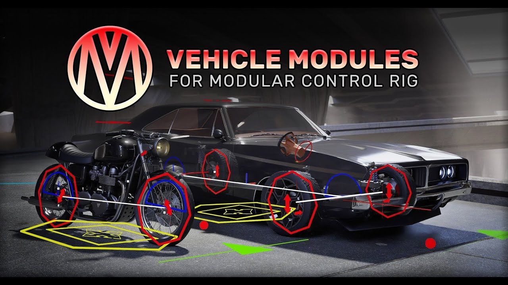

歷史參考｜Unreal 車輛 Control Rig 模組：組合車架與程序式駕駛控制
2026 年介紹的 Control Rig Modules For Vehicles，提供 Unreal Engine 模組化綁定與配套藍圖，面向機車、汽車與多軸卡車，可用於 Sequencer 動畫或互動式駕駛表現。

Unreal ★★★☆☆
完整分析
工具流程：以模組組裝車輛綁定
產品介紹描述以拖放模組組裝程序式綁定，並聲稱可適應不同骨架結構與比例，另支援多種骨骼階層和命名規則；這些是來源列出的工具設計方向。
製作應用：鏡頭動畫與互動控制
文中分別列出 Sequencer 的車輛鏡頭動畫、遊戲內過場，以及互動式程序駕駛動畫；另有地面與空中模式切換，讓不同運動情境共用車輛控制框架。
驗證限制：未提供跨車型結果
來源屬資產介紹，雖宣稱可適應不同車架，卻沒有逐車型的變形、接地或效能測試；因此不能把支援範圍解讀成所有自訂車輛都已驗證，也不據此宣稱具備真實車輛物理精度。
BRIEF｜來源已驗證；證據深度較有限，完整分析會明確區分已知資訊與待驗證事項。